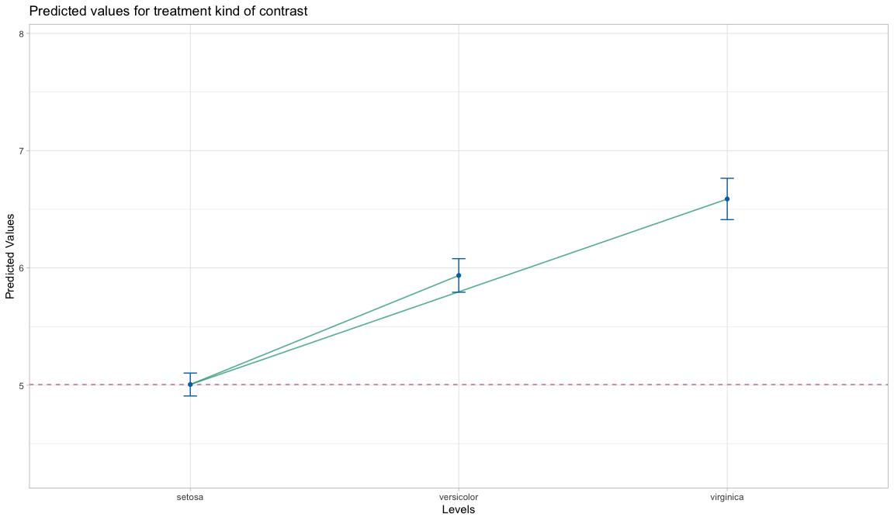

MoPlot is an R package designed to visualize linear models that include categorical predictors. It enhances the interpretability of complex model outputs through clear and intuitive graphical representations, with a particular focus on the contrasts used for categorical variables. By highlighting these contrasts, MoPlot helps users better understand the specific comparisons underlying model estimates.
Installation
You can install the development version of MoPlot like so:
devtools::install_github("Moplot/Moplot")MoPlotOneWay
MoPlotOneWay() is a function for visualizing the results of a linear model with one categorical predictor and one numeric dependent variable. It takes as input a model created with lm() and produces a plot that highlights group means with their associated uncertainty using bars, and visually emphasizes significant contrasts through colored lines. Optionally, the raw data points can be displayed in the plot. A secondary panel shows the model coefficients, including standardized beta values and effect sizes such as Cohen’s d, allowing for a clear and informative summary of the model’s findings.
Treatment coding
Treatment coding schema, without data and coefficients, sig.level at .05
library(MoPlot)
# Using Iris data
data(iris)
iris$Species <- factor(iris$Species)
contrasts(iris$Species) <- contr.treatment(3)
# Fit the model
model <- lm(Sepal.Length ~ Species, data = iris)
# MoPlotting treatment
MoPlotOneWay(model, data = FALSE, coef = FALSE, siglevel = 0.05)
#> This graphical representation illustrates the linear model, where
#> Species is the categorical predictor (represented on the x-axis with its levels),
#> and Sepal.Length is the numerical dependent variable (plotted on the y-axis).
#> The contrast type applied is treatment, which compares each group mean against
#> the baseline mean of setosa (the first level of the predictor).
#> Blue dots indicate the expected values (means) for each group, while the error bars
#> represent the uncertainty associated with these estimates.
#> The dashed purple line marks the baseline expected value.
#> Green lines highlight significant contrasts, with a significance threshold of 0.05 for the first type of error.
Treatment coding schema, with data and coefficients, sig.level at .05
# MoPlotting
MoPlotOneWay(model, data = TRUE, coef = TRUE, siglevel = 0.05)
#> This graphical representation illustrates the linear model, where
#> Species is the categorical predictor (represented on the x-axis with its levels),
#> and Sepal.Length is the numerical dependent variable (plotted on the y-axis).
#> The contrast type applied is treatment, which compares each group mean against
#> the baseline mean of setosa (the first level of the predictor).
#> Blue dots indicate the expected values (means) for each group, while the error bars
#> represent the uncertainty associated with these estimates.
#> The dashed purple line marks the baseline expected value.
#> Green lines highlight significant contrasts, with a significance threshold of 0.05 for the first type of error.Sum coding
Sum coding schema, without data and coefficients, sig.level at .1
# Using Sum coding
contrasts(iris$Species) <- contr.sum(3)
# Fit the model
model <- lm(Sepal.Length ~ Species, data = iris)
# MoPlotting sum
MoPlotOneWay(model, data = FALSE, coef = FALSE, siglevel = 0.1)
#> This graphical representation depicts the linear model, with
#> Species as the categorical predictor (levels shown on the x-axis),
#> and Sepal.Length as the numerical dependent variable (values displayed on the y-axis).
#> The contrast type is sum, where each group mean is compared to
#> the intercept, which serves as the baseline.
#> Blue dots represent the expected values (means) for each group, and error bars capture
#> the uncertainty associated with these estimates.
#> The dashed purple line marks the intercept expected value.
#> The green error bars highlight significant contrasts, with 0.1 as the threshold for the first type of error.
Sum coding schema, with data and coefficients, sig.level at .1
# MoPlotting sum
MoPlotOneWay(model, data = TRUE, coef = TRUE, siglevel = 0.1)
Helmert coding
Helmert coding schema, without data and coefficients, sig.level at .05
# Using a custom function to generate data with four groups
DT <- DatasetOne(n_sample = 20, means = c(120, 135, 115, 120), sds = 20)
DT$Ind <- as.factor(DT$Ind)
contrasts(DT$Ind) <- contr.helmert(4)
# Fit the model
model <- lm(Dep ~ Ind, data = DT)
# MoPlotting sum
MoPlotOneWay(model, data = FALSE, coef = FALSE, siglevel = 0.05)
#> This graphical representation depicts the linear model, with
#> Ind as the categorical predictor (levels are represented on the x-axis),
#> and Dep as the numerical dependent variable (values are shown on the y-axis).
#> The applied contrast type is helmert. In this type of contrast, each group mean is compared to
#> the cumulative mean of all previous groups.
#> Blue dots represent the expected values (means) for the cumulative means,
#> while orange dots represent the expected values (means) for each individual group.
#> Error bars indicate the uncertainty associated with each expected value.
#> The dashed purple line marks the baseline expected value.
#> Green lines highlight significant contrasts, with 0.05 serving as the threshold for the first type of error.
Helmert coding schema, with data and coefficients, sig.level at .2
# MoPlotting sum
MoPlotOneWay(model, data = TRUE, coef = TRUE, siglevel = 0.2)